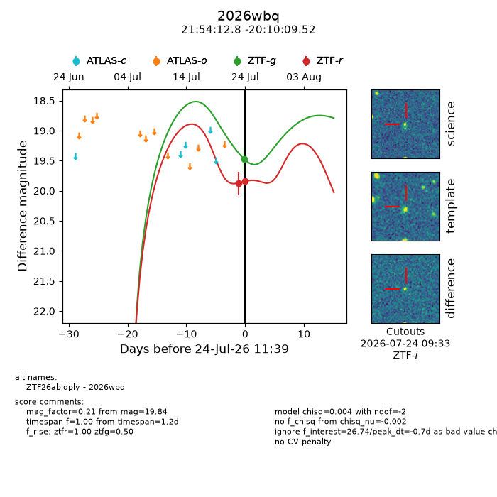
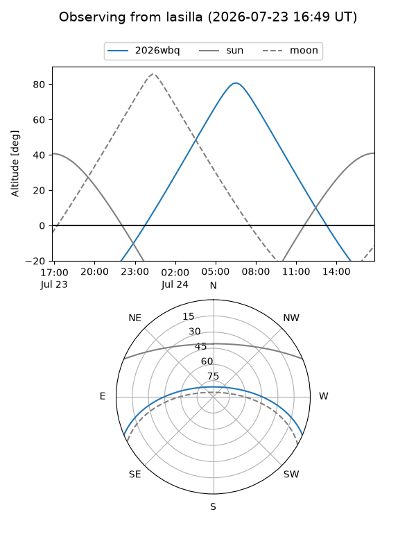
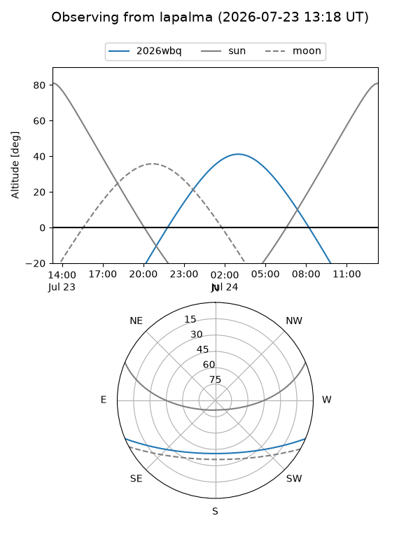
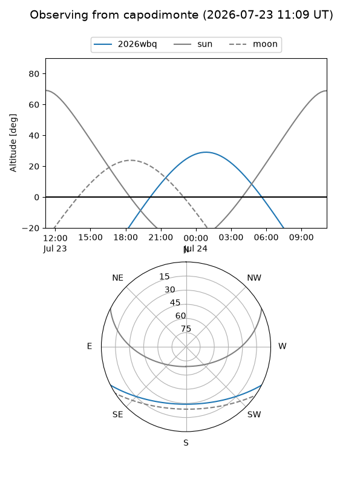
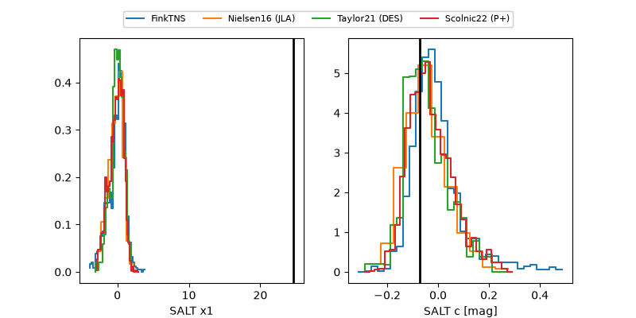

2026wbq
Target 2026wbq at 2026-07-24 11:41
Aliases and brokers:
FINK-ZTF: ztf.fink-portal.org/ZTF26abjdply
Lasair-ZTF: lasair-ztf.lsst.ac.uk/objects/ZTF26abjdply
ALeRCE-ZTF: alerce.online/object/ZTF26abjdply
YSE-PZ: ziggy.ucolick.org/yse/transient_detail/2026wbq
TNS name: wis-tns.org/object/2026wbq
Direct TNS query: direct search
alt names
ZTF26abjdply (ztf,fink_ztf)
2026wbq (tns,yse)
Coordinates:
equatorial (ra, dec) = 328.5533,-20.16931
equatorial (HMS+DMS) = 21:54:12.80,-20:10:09.52
galactic (l, b) = (32.8827,-49.03033)
Flags:
TNS type: nan
peak dt: -0.7
Photometry:
last ztfg=19.47, ztfr=19.84
1 ztfg, 2 ztfr detections
Lightcurve

Visibility



Additional plots
